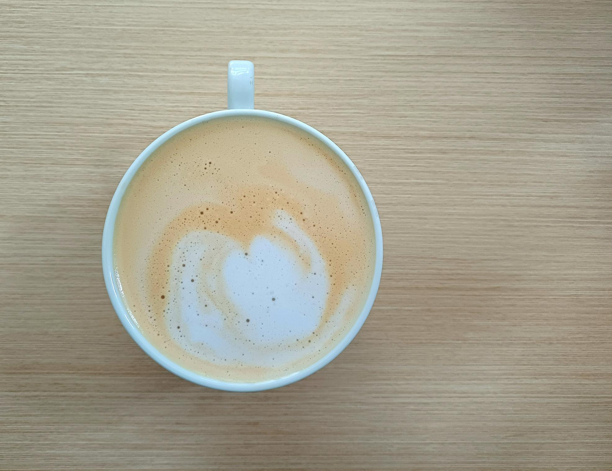

What is a Latte?
A latte is a popular espresso-based beverage made with one or more shots of espresso and steamed milk, topped with a light layer of foam. It is known for its smooth texture and balanced flavor.
Nutrition & Info (16oz)
- Calories: ~190
- Sugar: ~18g (naturally occurring from milk)
- Caffeine: ~150mg
- Milk Type: Whole (can substitute oat, almond, soy)
- Espresso Shots: 1–2
Flavor Profile
Mild sweetness from steamed milk, low bitterness, creamy mouthfeel, and subtle espresso richness.
Fun Facts
- “Latte” means “milk” in Italian.
- Popular for latte art designs.
- Often used as a base for flavored syrups.